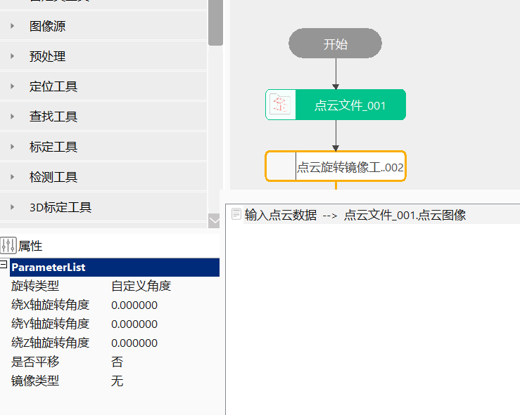

点云旋转镜像工具主要是对输入点云图像进行旋转、镜像变换。
在3D测量中，将原始输入点云图像进行旋转、镜像等操作，以便后续处理。

无
| 参数名称 | 参数描述 |
|---|---|
| 输入点云数据 | 输入待处理的点云图像 |
| 参数名称 | 参数描述 |
|---|---|
| 旋转类型 | 将点云图像旋转一定角度，分为4种绕Z轴旋转的特殊角度，0度、90度、180度、270度和绕XYZ旋转的自定义角度 |
| 绕X/Y/Z轴旋转角度 | 用户自定义的旋转角度，取值范围[-360, 360] |
| 是否平移 | 选择“是”，则在旋转之后进行平移变换 |
| X/Y/Z方向平移量 | 平移变换中X/Y/Z方向的平移量，取值范围[-1000000, 1000000]，单位为mm |
| 镜像类型 | 对点云图像进行镜像操作，分为4种类型，无、水平、垂直和水平垂直 |
| 参数名称 | 参数描述 |
|---|---|
| 输出点云图像 | 输出旋转镜像后的点云图像 |
| 旋转矩阵 | 根据旋转角度输出旋转矩阵 |
| 参数名称 | 参数描述 |
|---|---|
| 输出点云图像 | 输出旋转镜像后的点云图像 |
| 旋转矩阵 | 根据旋转角度输出旋转矩阵 |
| 执行结果 | 工具执行结果 |
| 执行时间 | 工具执行时间 |
参见“\Samples\3D\点云\点云测量.gvp”。
工具按照旋转、平移、镜像的顺序执行。